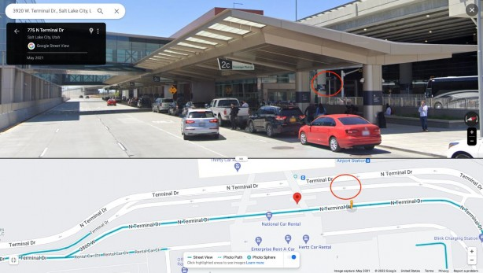

Utah bus map in Salt Lake Express https://saltlakeexpress.com/destinations/
The Pickup/Drop Off Location closest to USU physics department is Logan (USU), UT
USU University Inn - Logan 650 N 875 E, Logan, UT 84321
(Load at the lobby of the University Inn.)
The Pickup/Drop Off Location closest to SLC airport is Salt Lake City Airport, UT
3920 W. Terminal Dr., Salt Lake City, UT 84122
Shuttle will drop off/pick up on the ground level outside of door L2. Shuttle will be located between pillar 3B and 4B in the B lanes.
